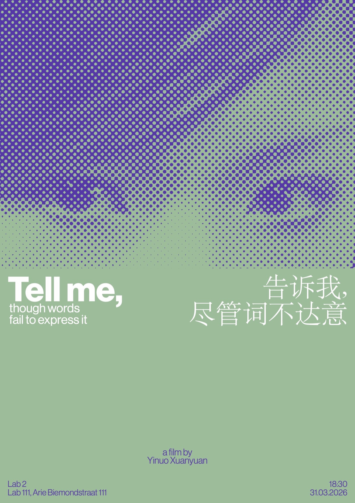

Tell me, though words fail to express it
告诉我，尽管词不达意
Documentary, 21 minutes 15 seconds. Unreleased. Presented by The Box, Werkplaats Typografie, as a private screening at LAB111, Lab 2, Amsterdam, 2026.
Film poster and title design by Lisa Lagova.
